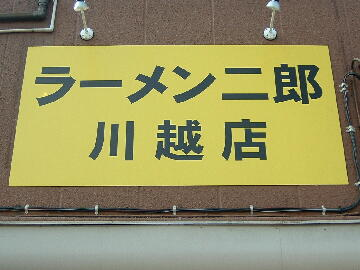
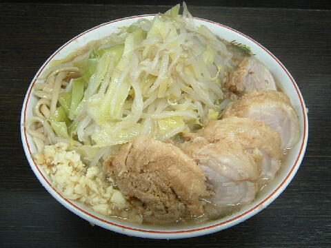
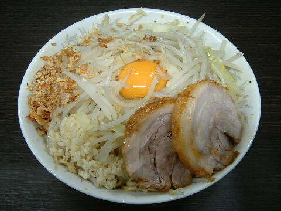
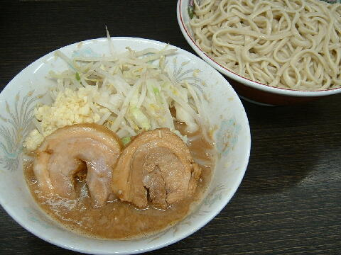

川越市 旭町 1-4-15
月・木
11：00〜14：00 18：00〜21：00

小ラーメン 750円、小豚ラーメン 900円
大ラーメン 800円、大豚ラーメン 1000円
汁なし ＋80円、つけ麺 ＋100円
ラー油 50円、チーズ 100円、うずら 100円、生たまご 50円（現金，店内非表示）
店員は、関内出身の店主と助手。
白コショウ（ギャバン）。しょうゆダレ。トウガラシ。
レンゲ無、ティッシュ無、名刺無。
BGMは、無。
トッピングは、二郎標準。
ラーメン二郎 川越店 川越店の公式HP
「ラーメン二郎 川越」でヤフー検索
「ラーメン二郎 川越」でヤフーリアルタイム検索
「ラーメン二郎 川越」でグーグル検索

小豚ラーメン ニンニク
麺は、平ストレートでやや硬めの茹で加減で小麦が詰まった二郎の太麺。
ぶたは、柔らかく厚切りのバラの巻きぶた。薄めの味付け。
スープは、豚出汁、カエシのバランスが良い微乳化傾向の美味しいもの。
ヤサイは、モヤシ7：キャベツ3の割合。ゆで方はやや柔らかめ。
ニンニクは、インパクトのある刻みニンニク。

小ラーメン＋汁なし ニンニク
トッピングはラーメンと同じ。
二郎の旨味が詰まったタレに、卵の黄身、フライドオニオンが加わる。
基本的には関内と同じだが麺の量は多い。

小ラーメン＋つけ麺 ニンニク
トッピングはラーメンと同じ。
つけ汁の丼には、ぶたとヤサイとニンニクが入る。
麺の丼には、冷水で絞められたシコシコの麺のみ。
ＰＣ店